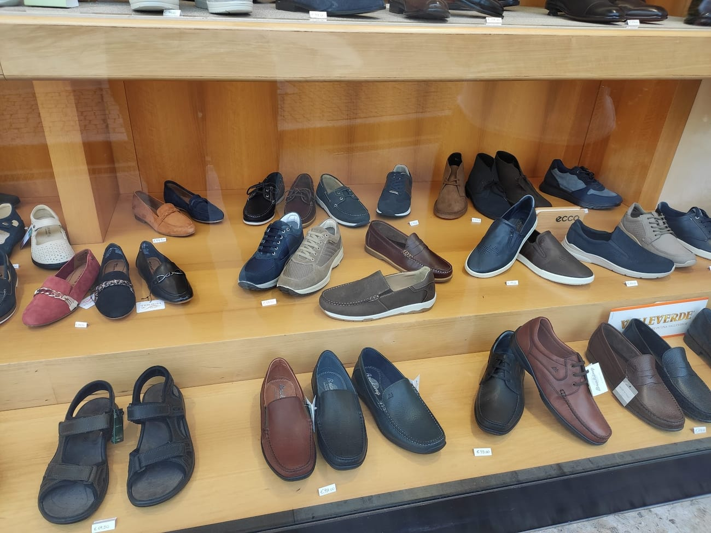
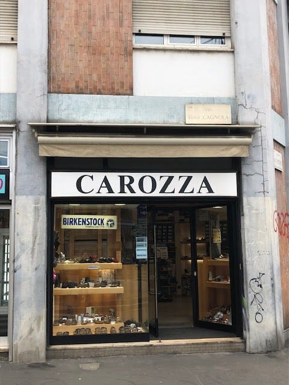
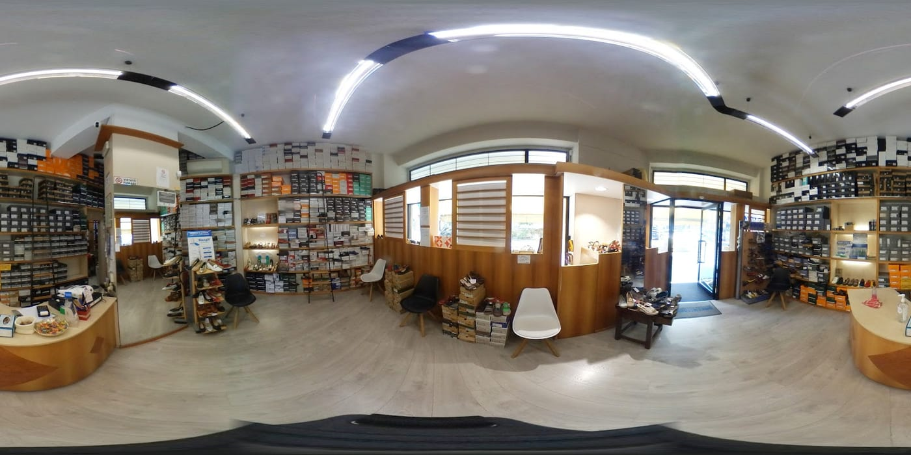
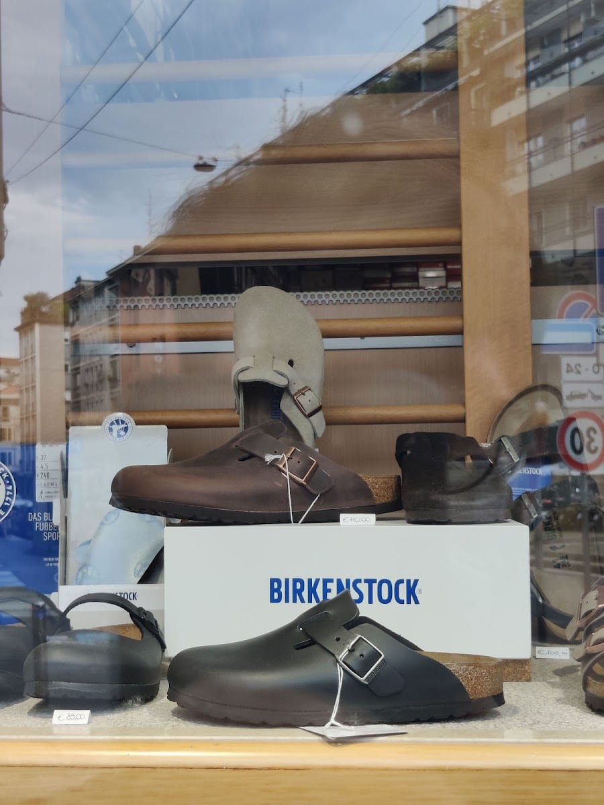
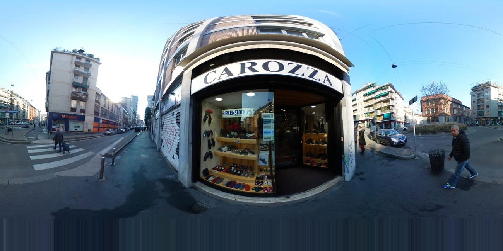
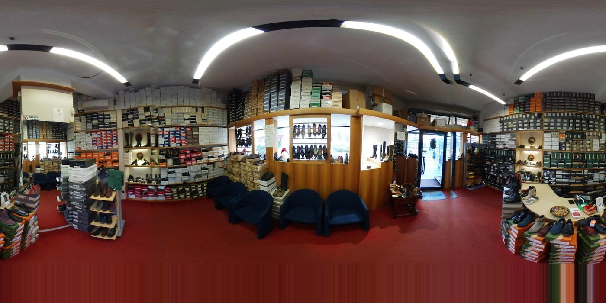
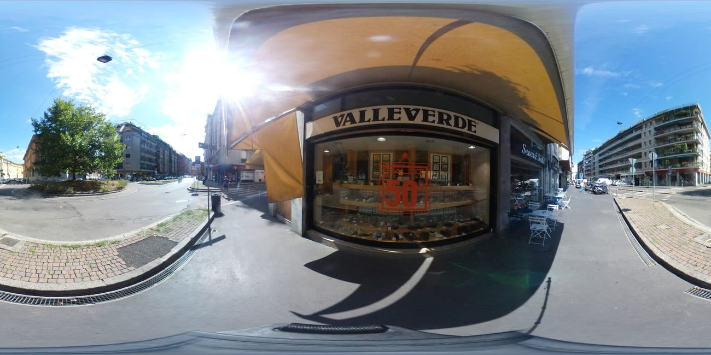

Comfort & Birkenstock
Il cuore del negozio: plantari, sandali e modelli iconici, dai Montana in poi.
Via Luigi Canonica 59 · Sempione, Milano
dal 1956 · tre generazioni
Scarpe comode e belle, da sfoggiare. Da tre generazioni scegliamo per te le migliori marche del comfort — a partire da Birkenstock — con la pazienza e la cura di un negozio di famiglia.


Dal 1956
Carozza Calzature è in Via Luigi Canonica, in zona Sempione, dal 1956. Da allora, di padre in figlio, la stessa idea: scegliere per i clienti scarpe comode ma belle, da poter sfoggiare.
Amore e passione per le calzature, un assortimento sempre ben rifornito e un consiglio paziente e competente: è per questo che, dopo quasi settant'anni, si torna.
Le marche
Selezioniamo le migliori marche della scarpa comoda e di qualità. E siamo rivenditori ufficiali Birkenstock.
…e molte altre. Chiedi in negozio: se non c'è, spesso lo troviamo per te.
Cosa trovi
Il cuore del negozio: plantari, sandali e modelli iconici, dai Montana in poi.
Calzature femminili comode ma eleganti, per tutte le stagioni.
Dalla scarpa classica alla comoda di tutti i giorni.
Per l'estate e per la casa, morbide e ben fatte.
Stivali e stivaletti di qualità, spesso anche in saldo.
Modelli da cerimonia e da ufficio, delle migliori marche.
Il negozio





Le voci
Negozio molto ben fornito per chi ama le calzature comode ma belle da sfoggiare. Personale competente, paziente e molto gentile.
Rossana Zaffaina · ★★★★★
Ottima esperienza, negozio ben rifornito di calzature uomo e donna. Ma la cosa stupenda è che sono anche rivenditori Birkenstock: cercavo il modello Montana da tempo e qui l'ho trovato.
Valeria · ★★★★★
The selection was great — lots of Birkenstocks, as well as several Italian brands like Löwenweiss. There are also dress shoes and boots; it's not just slippers and sandals! The owner was lovely.
Craig Sauers · ★★★★★
Oggi ho acquistato uno splendido paio di stivali in saldo. Commessa super gentile: mi sono trovata benissimo.
Recensione Google · ★★★★★
Amore e passione per le scarpe. Si sente, appena entri.
Recensione Google · ★★★★★
Il negozio
La mappa è di Google: aprendola, Google riceve il tuo indirizzo IP e può usare i suoi cookie.
FAQ
In Via Luigi Canonica 59, in zona Sempione a Milano. Un negozio di famiglia dal 1956.
Sì, siamo rivenditori ufficiali Birkenstock, con un ampio assortimento di modelli. Accanto a molte altre marche comfort come Ecco, Legero, Ara, Löwenweiss, Giesswein, Tamaris e Valleverde.
Calzature per uomo e donna: comode ma belle da sfoggiare. Scarpe eleganti, stivali, sandali, pantofole e le migliori marche del comfort.
Aperti tutti i giorni. Da martedì a sabato 9:30–13:30 e 15:30–19:30; lunedì 10–13 e 15:30–19:30; domenica 10:30–13:30 e 14:30–18:30.